Volkswagen
Das Auto
Founded: 1937
Country: Germany
Icon: Beetle, Golf
People's Car
Das Auto
Volkswagen's story is one of the most remarkable in automotive history – from Nazi origins to post-war rebirth, from a single model to the world's largest automaker.
In the 1930s, Adolf Hitler wanted a "people's car" – affordable transportation for the masses. He tasked Ferdinand Porsche with designing it. The result was the Volkswagen Beetle (Type 1), with its distinctive rounded shape, air-cooled rear engine, and simple engineering.
The factory was built in Wolfsburg, but wartime production focused on military vehicles – the Kübelwagen and Schwimmwagen. After the war, the factory was in ruins, and Volkswagen faced an uncertain future.
British Army officer Major Ivan Hirst took control of the factory and restarted production. He recognized the Beetle's potential and ordered 20,000 cars. This decision saved Volkswagen. By 1946, they were producing 1,000 cars per month.
The 1950s saw Volkswagen's export boom. The Beetle became a phenomenon in America – cheap, reliable, and distinctive. The Type 2 Bus became the vehicle of choice for surfers and hippies. Volkswagen's advertising, created by Doyle Dane Bernbach, was revolutionary – honest, witty, and self-deprecating.
The Beetle kept improving but remained fundamentally the same for decades. By the 1970s, it was outdated. Volkswagen faced a crisis – the Beetle couldn't last forever. The solution was the 1974 Golf, designed by Giorgetto Giugiaro. Front-wheel drive, water-cooled, hatchback – it was completely different from the Beetle and saved the company again.
The Golf became Volkswagen's new icon, evolving through eight generations. The 1976 Golf GTI created the "hot hatch" segment. Volkswagen expanded with Passat, Polo, and Scirocco.
Through acquisitions, Volkswagen became an empire – Audi, SEAT, Škoda, Bentley, Bugatti, Lamborghini, Porsche. The group is now the world's largest automaker. The 2015 "Dieselgate" scandal was a major setback, forcing a massive shift toward electrification. Today, Volkswagen is investing heavily in EVs with the ID family, aiming to become the leader in electric mobility.
"The Beetle will be built as long as it makes sense."- Heinz Nordhoff, VW CEO 1948-1968
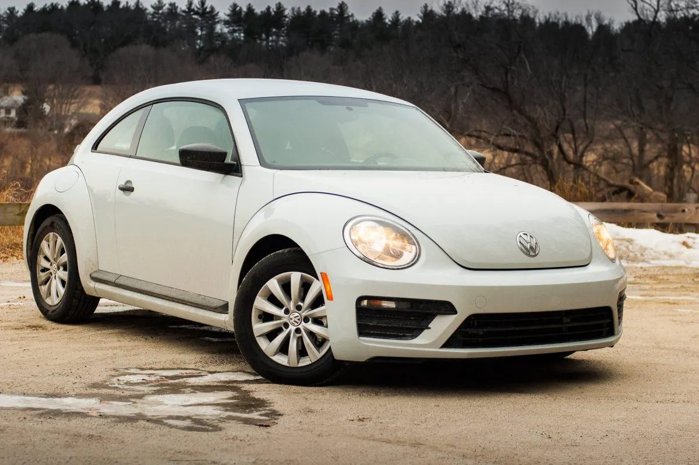
1938-2003
Over 21 million produced – the most popular car of its era. The Beetle's air-cooled rear engine, distinctive shape, and reliability made it a global icon. Production continued in Mexico until 2003.
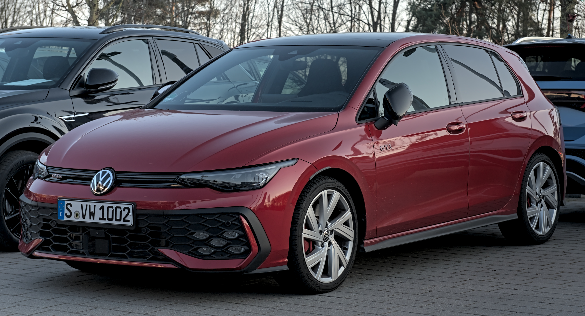
1974-present
Volkswagen's modern icon. The Golf defined the hatchback segment and has been Europe's best-seller for decades. Eight generations, over 35 million sold.
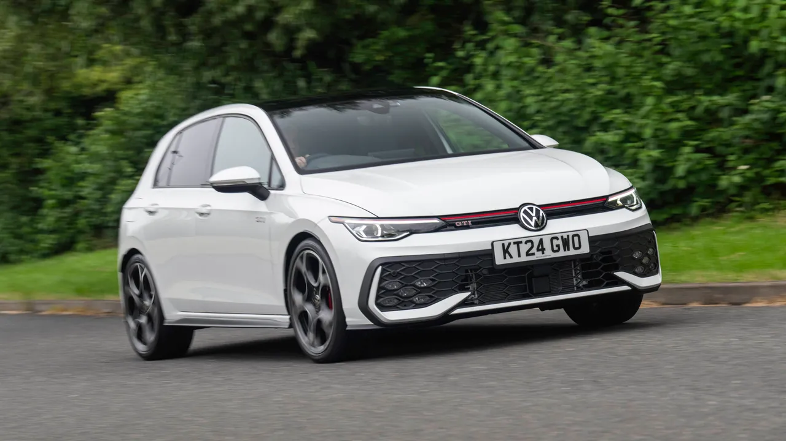
1976-present
The original hot hatch. A group of VW engineers created a sporty Golf with fuel injection, sport suspension, and plaid seats. It created a segment and a cult following.
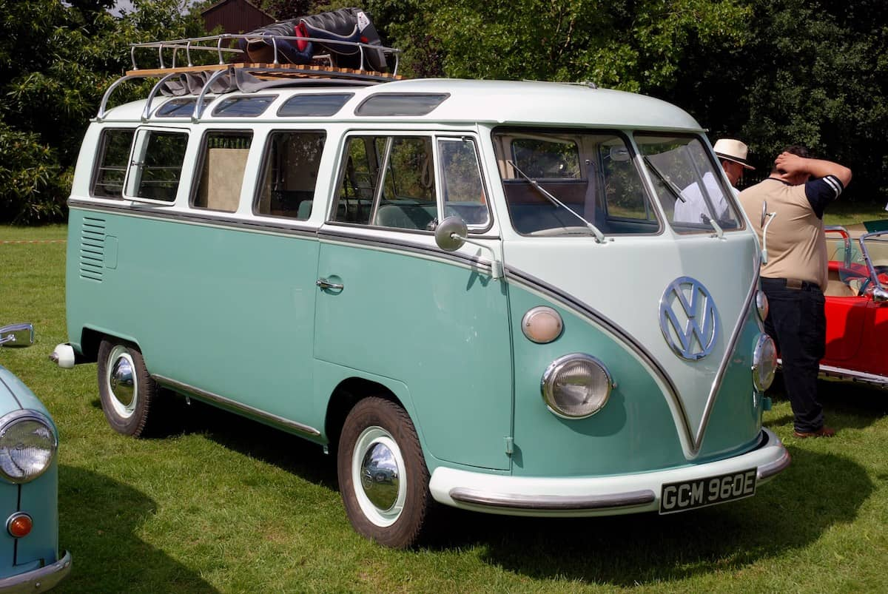
1950-2013
The hippie van. The Type 2 was based on Beetle mechanicals but offered space and versatility. Icon of the counterculture movement.
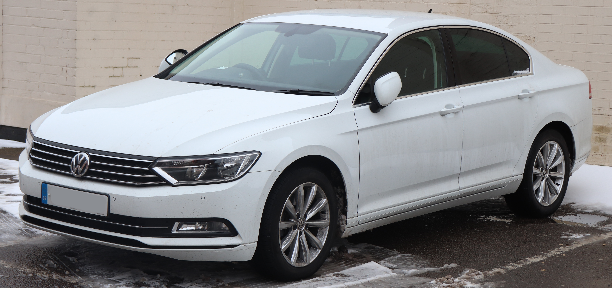
1973-present
The midsize sedan and wagon. European sophistication and space at accessible prices.
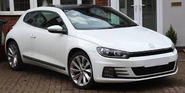
1974-1992, 2008-2017
The sporty coupe designed by Giugiaro. Sleek and affordable style.
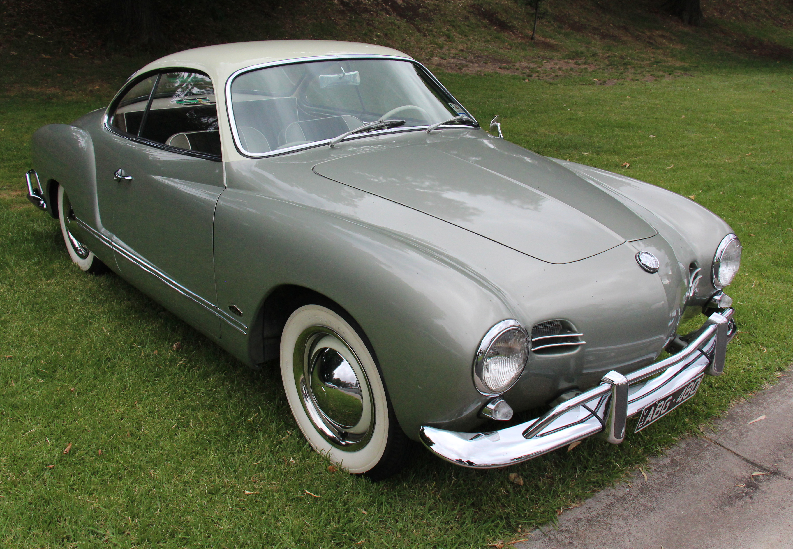
1955-1974
Beauty on Beetle mechanics. Stunning Italian design wrapped around reliable VW engineering.
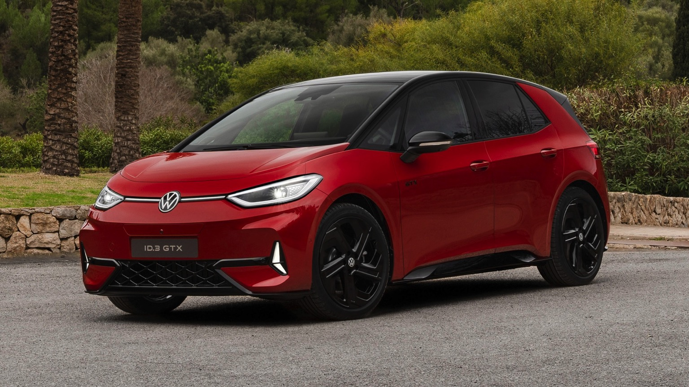
2020-present
The electric Golf. First model on VW's MEB electric platform, launching the ID family and VW's electric future.
The Beetle's journey from Nazi project to global icon is one of automotive history's most fascinating stories.
Ferdinand Porsche's design was innovative: rear-mounted air-cooled engine, torsion bar suspension, and distinctive rounded shape. The "KdF-Wagen" (Strength Through Joy Car) was meant to be affordable for every German family. War intervened, and only a few hundred were built before production switched to military vehicles.
The factory was in ruins, but British Army officer Ivan Hirst saw potential. He restarted production, and the first post-war Beetles were actually sold to British occupation forces. By 1946, production reached 1,000 per month.
Volkswagen's CEO Heinz Nordhoff focused on exports, especially America. The Beetle's small size, reliability, and low price appealed to practical Americans. Sales skyrocketed.
The Beetle became a symbol of the counterculture – cheap, simple, and anti-establishment. It starred in Disney's "The Love Bug" as Herbie. Its advertising was revolutionary.
By the 1970s, the Beetle was outdated. Production in Germany ended in 1978, but continued in Mexico and Brazil. The last Beetle (the 21,529,464th) rolled off the line in Puebla, Mexico, in 2003, shipped to Germany and displayed at Wolfsburg.
A retro revival on Golf platform, capturing the spirit if not the engineering. Followed by the Beetle (2011-2019), more masculine and modern.
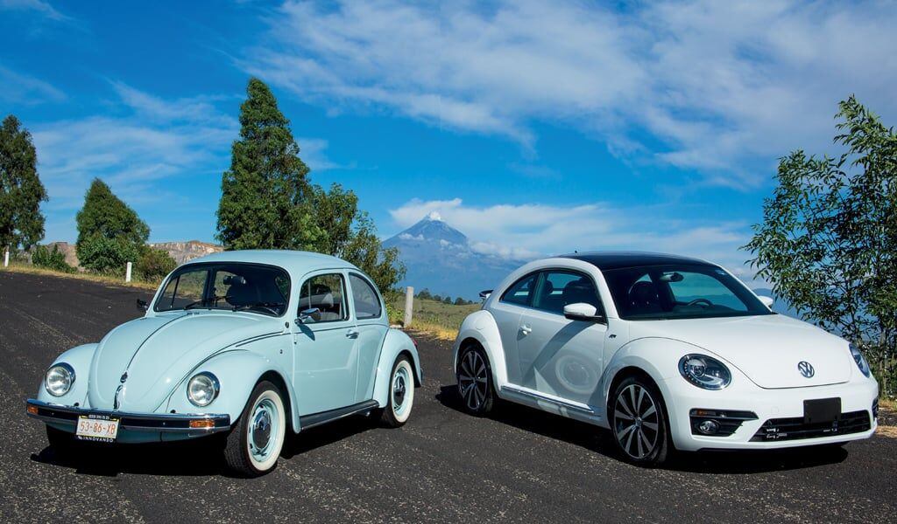
The Golf, introduced in 1974, was Volkswagen's most important car since the Beetle. Designed by Giorgetto Giugiaro, it established the modern hatchback template – front-wheel drive, foldable rear seats, and efficient packaging.
In 1975, a group of VW engineers led by Alfons Löwenberg created a secret project – a sporty Golf with fuel injection, sport suspension, wider tires, and distinctive red trim. They presented it to management, who approved production. The 1976 Golf GTI had 110 hp and could reach 113 mph – revolutionary for a small hatchback. It created the "hot hatch" segment and became a legend.

"The Golf GTI is the original hot hatch – the benchmark that all others aspire to."
The Type 2 Bus was born from a simple idea: put a box on Beetle mechanicals. Dutch VW importer Ben Pon sketched the concept in 1947, and production began in 1950.
The T1 became a counterculture icon. In the 1960s, it was the vehicle of choice for surfers, hippies, and free spirits – practical, affordable, and symbolic of alternative lifestyles. The ID. Buzz electric version brings the spirit into the 21st century.
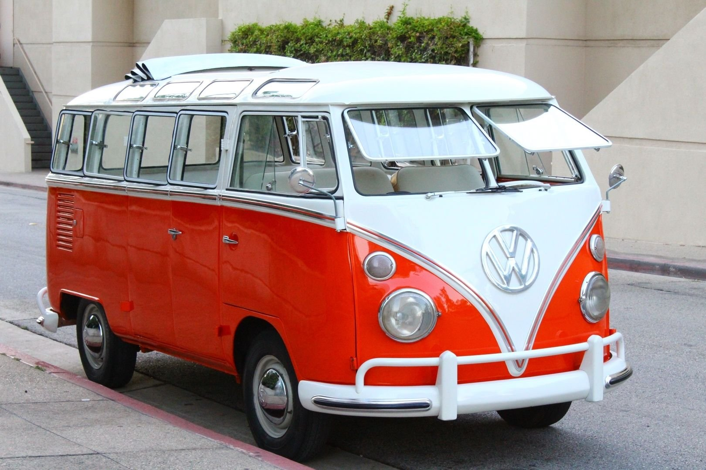
The I.D. R electric racer demonstrated Volkswagen's EV performance potential. It smashed the Pikes Peak record in 2018 and the Goodwood hillclimb record in 2019 – proving electric can be fast.
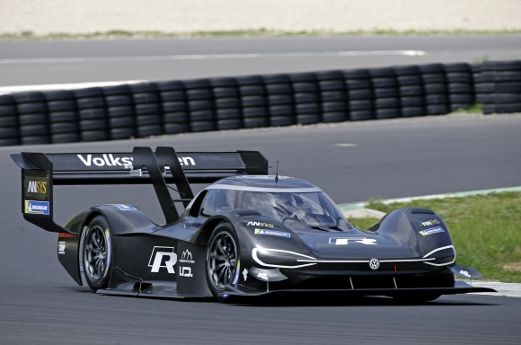